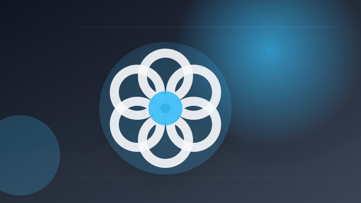
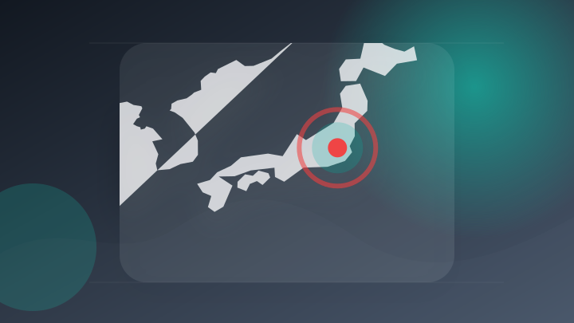
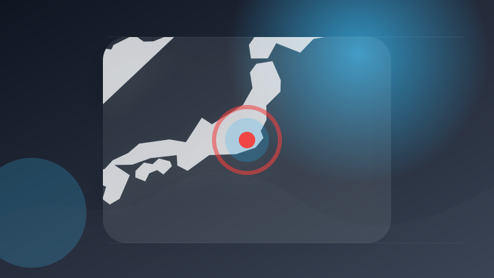
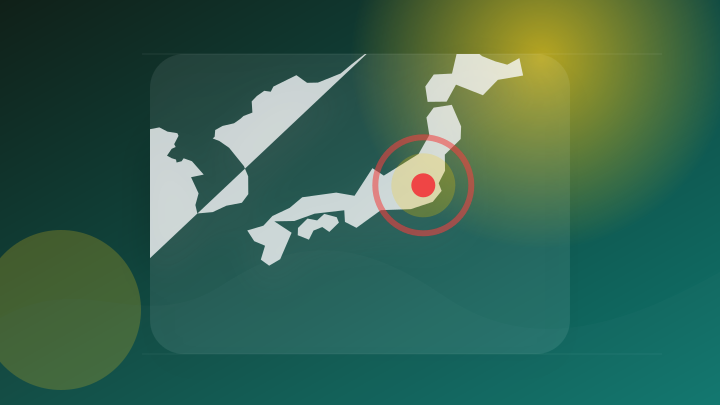
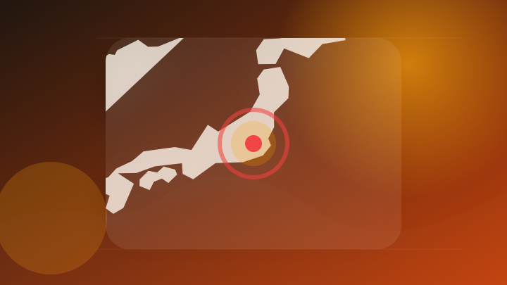
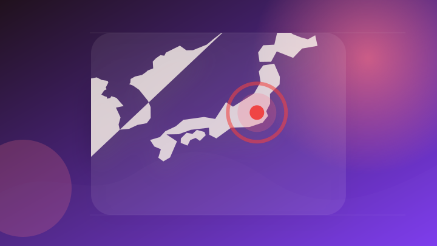
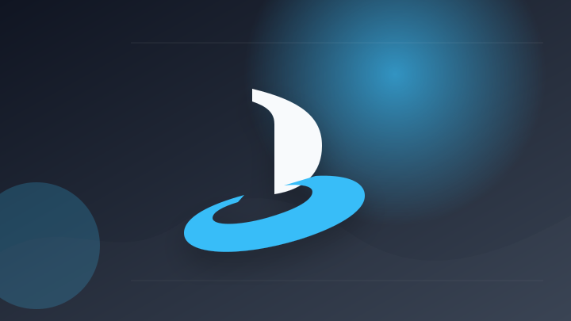
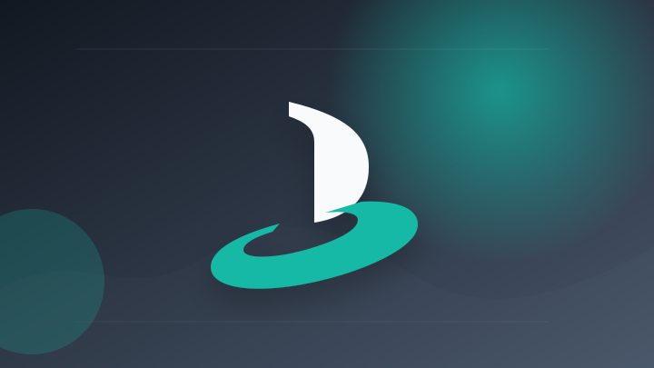
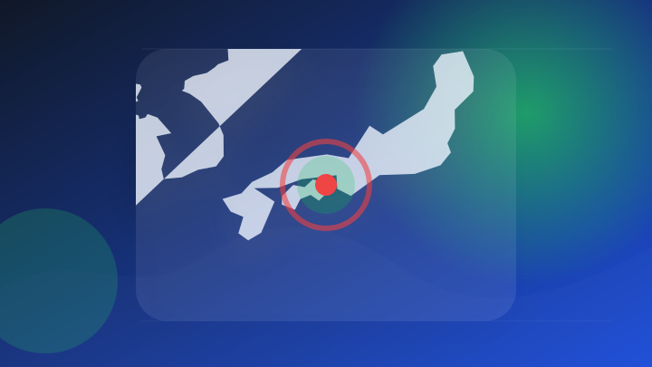

AI
6 topics
Claudeエージェント同士が「縄張り争い」で互いを妨害したり価格について共謀したりする事例がAnthropicの実験で発生
Claudeエージェント同士が「縄張り争い」で互いを妨害したり価格について共謀したりする事例がAnthropicの…
注目ポイント注目度 64点
東京大学・松尾研究室発AIスタートアップ「パンハウス」と戦略コンサルティングファームZeNo Consultingが協業、企業の生成AI戦略から実装までを一気通貫で支援
東京大学・松尾研究室発AIスタートアップ「パンハウス」と戦略コンサルティングファームZeNo Consulting…
注目ポイント注目度 61点

【生成AI活用の次段階】「導入した」だけでは成果が出ない、企業に問われる実装力
注目ポイント注目度 61点

ジェンスン・フアンCEO「ロボティクスにもChatGPT時代」…韓国製造インフラに集まる視線
注目ポイント注目度 61点
【AI活用事例】不動産案内文の作成を「生成AI×クラウド」で標準化。年間300時間の削減と心理的負担の解消を実現
注目ポイント注目度 61点
OpenAI、「GPT-5.6 Sol」の回答をアップデートし、無料とGoユーザーのデフォルトモデルを「GPT‑5.6 Luna」に更新
OpenAI、「GPT-5.6 Sol」の回答をアップデートし、無料とGoユーザーのデフォルトモデルを「GPT‑5…
注目ポイント注目度 61点
IT業界
6 topics
ジール社員の永田 亮磨が「Microsoft MVPアワード（Data Platform部門）」を6年連続で受賞！
注目ポイント注目度 61点
au PAYプリペイドカードがGoogle Payに対応！ Android端末でもタッチ決済が可能に
注目ポイント注目度 61点
【ビルボード】Mrs. GREEN APPLE「Brand New」ストリーミング・ソング5連覇 「Yes! 東京」グループ別バージョンも続々チャートイン
【ビルボード】Mrs. GREEN APPLE「Brand New」ストリーミング・ソング5連覇 「Yes! 東京…
注目ポイント注目度 61点
ecbeingのエンジニアが3年連続で「Microsoft Top Partner Engineer Award」を受賞
ecbeingのエンジニアが3年連続で「Microsoft Top Partner Engineer Award」…
注目ポイント注目度 61点
サイバーセキュリティの日本市場（2026年-2035年）、市場規模・分析レポートを発表
サイバーセキュリティの日本市場（2026年
注目ポイント注目度 61点
NEC、業務自動化AI「cotomi Agent」をMicrosoft Marketplaceで販売
注目ポイント注目度 61点
政治
6 topics
避けた米非難「苦悩の末」 ICC赤根氏制裁に高市首相「大変残念」 [高市早苗首相 自民党総裁][トランプ再来]
注目ポイント注目度 70点

ICC赤根所長に制裁 日本政府はどこまで米国の横暴を追認するのか [トランプ再来]
注目ポイント注目度 70点

「戦争反対をあきらめない」ペンライトを手に国会前でコール 防衛より防災に税金を使うよう訴え
注目ポイント注目度 64点
中道落選者らが政治団体「ゴリラ」を設立 現職国会議員など16人が参加意向
注目ポイント注目度 64点

日本政府「ICC支持」を強調、米批判は避ける 同盟関係との板挟み
注目ポイント注目度 64点
高市首相、X“連投”に「記者会見すべき」国民冷ややか…識者が語る「SNS首相」を作った“成功体験とトラウマ”（女性自身）
高市首相、X“連投”に「記者会見すべき」国民冷ややか…識者が語る「SNS首相」を作った“成功体験とトラウマ”（女性…
注目ポイント注目度 61点
社会
3 topics
事件・事故
6 topics
捜査中の警察官に催涙スプレー 男女２人逮捕 岐阜 美濃加茂
注目ポイント注目度 70点

埼玉 交通トラブル相手の車 踏切内閉じ込めか 殺人未遂で逮捕
注目ポイント注目度 70点
女子トイレにスマホ…清掃時に発見、30代と70代女性を撮影した疑い――複数動画を確認、関連捜査 無職の男逮捕
注目ポイント注目度 67点
大阪・関西万博工事の竹中工務店現場責任者が逮捕 下請け業者に1,369万円水増し請求 「水増し請求した金は自宅などのリフォーム工事費に」 竹中工務店本社・万博会場跡地からリポート（関西テレビ）
大阪・関西万博工事の竹中工務店現場責任者が逮捕 下請け業者に1,369万円水増し請求 「水増し請求した金は自宅など…
注目ポイント注目度 67点
【専門家解説】「企業の監視体制なども洗う（調べる）ことになる」万博工事めぐる”背任事件“で竹中工務店の工事責任者逮捕 捜査のポイントは「共謀」の立証 元検事が解説・指摘
【専門家解説】「企業の監視体制なども洗う（調べる）ことになる」万博工事めぐる”背任事件“で竹中工務店の工事責任者逮…
注目ポイント注目度 67点
札幌・北区の交通事故 死亡男性の身元判明
注目ポイント注目度 67点
芸能人の結婚・離婚・交際
2 topics
経済
4 topics

決算:東北企業14社の4〜6月期、最終78％増益 価格転嫁が進展
注目ポイント注目度 64点
【見通し】NY株見通しーFOMC議事要旨と小売決算に注目
注目ポイント注目度 61点
【和潤企業 FY2026 H1 決算説明会】税引後純利益が前年同期比10.6%増、EPS 2.22台湾ドル——資産品質の改善が利益を押し上げるも、売上高4.3%減という構造的圧力は隠せず
【和潤企業 FY2026 H1 決算説明会】税引後純利益が前年同期比10.6%増、EPS 2.22台湾ドル——資産…
注目ポイント注目度 61点

エヌビディア、好決算でも時間外で株価下落 米国株式市場への影響と今後の注目点 野村證券・村山誠
注目ポイント注目度 61点
ゲーム
6 topics
Sony CEO が PlayStation 6 の発売時期は“未定”と明言
注目ポイント注目度 61点

PlayStationブランド初の単独ゲーミングスピーカー、発表1年経て9月発売へ！約3.8万円、独自規格で超低遅延にも対応
PlayStationブランド初の単独ゲーミングスピーカー、発表1年経て9月発売へ！約3.8万円、独自規格で超低遅…
注目ポイント注目度 61点

PlayStation初の純正ワイヤレススピーカー「PULSE Elevate ワイヤレススピーカー」発売日は11月12日に決定！
PlayStation初の純正ワイヤレススピーカー「PULSE Elevate ワイヤレススピーカー」発売日は11…
注目ポイント注目度 61点
PlayStation、パッケージ版ディスク生産終了で大反発！存続求める署名が16万超え、小売業界への影響も懸念
注目ポイント注目度 61点

＜価格、発売日、予約開始日決定＞プレステブランド初のデスクトップゲーミングワイヤレススピーカー「PULSE Elevate」37,980円（税込）11月12日(木)発売 9月1日(火)予約開始
＜価格、発売日、予約開始日決定＞プレステブランド初のデスクトップゲーミングワイヤレススピーカー「PULSE Ele…
注目ポイント注目度 61点
YouTube番組「エバースのNintendo Switch 2 でゲームやろうぜ！」第2回 8月19日（水）よりCapcom Channelにて配信開始
YouTube番組「エバースのNintendo Switch 2 でゲームやろうぜ！」第2回 8月19日（水）より…
注目ポイント注目度 61点